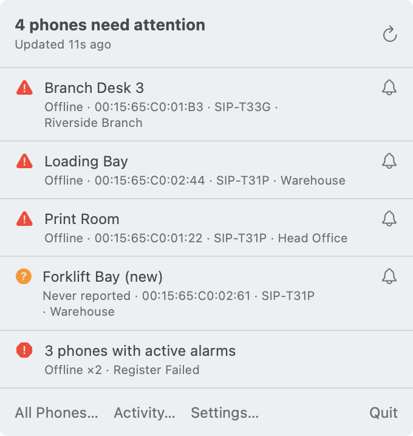
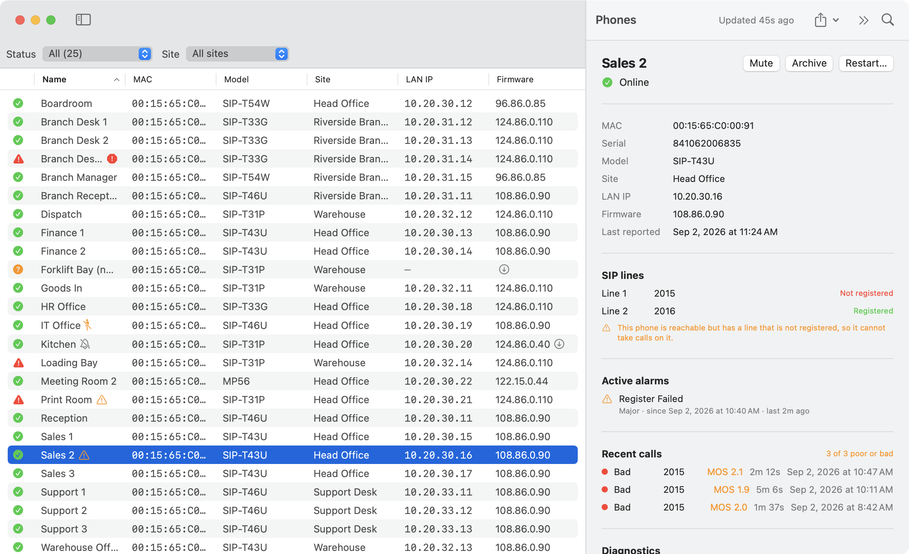
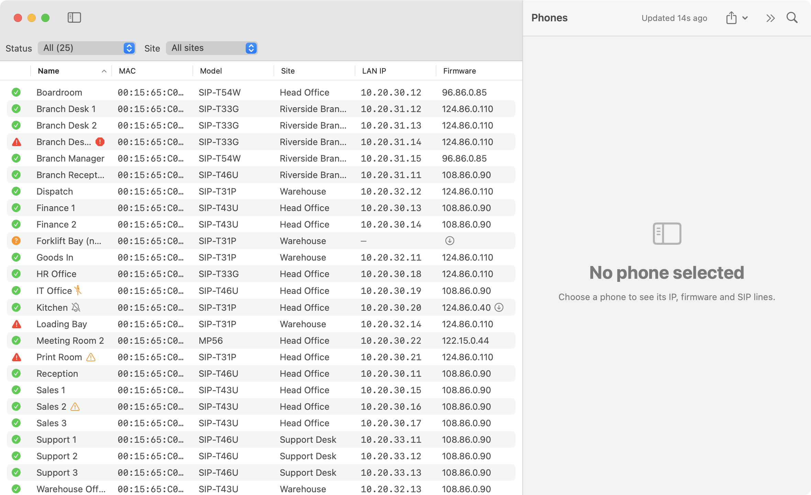
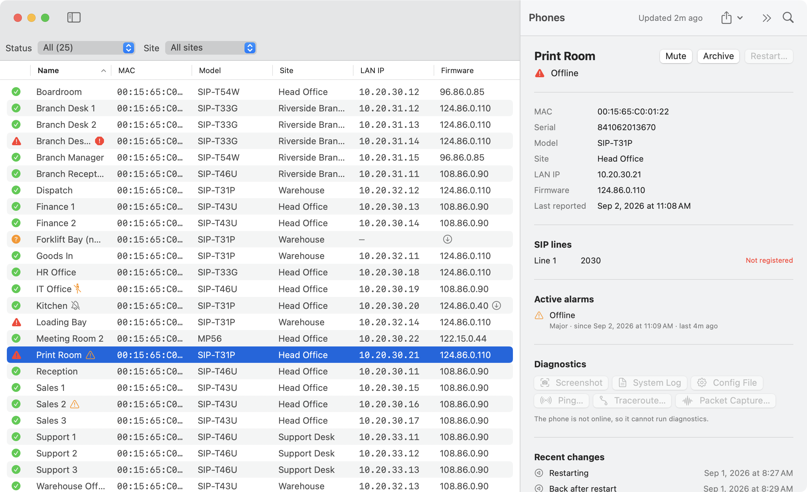
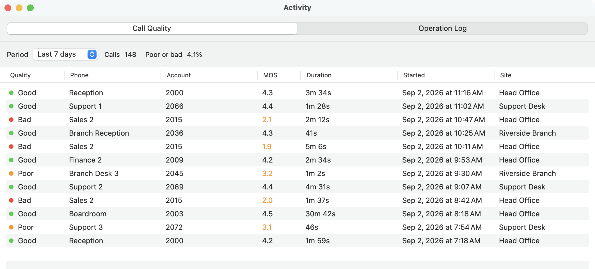
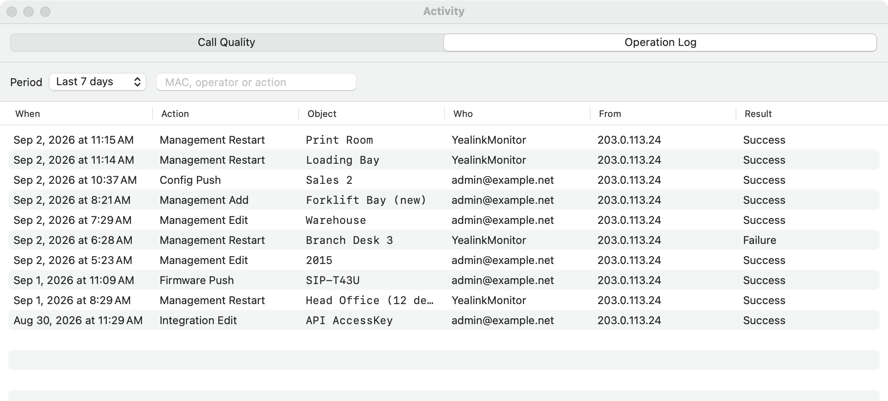

Know when a phone goes down.
A macOS menu bar app that watches a fleet of Yealink handsets through the YMCS Open API and tells you the moment one stops answering — before somebody walks over to report it.
macOS 14 or later · Universal (Apple Silicon and Intel) · Requires a YMCS subscription with API access


What it does
Watches without being watched
Polling starts when the app launches, not when you first open the menu. A Mac that boots and is left alone is still monitoring.
Tells you once, not forty times
Outages are debounced across polls and batched, so a switch failure that drops forty phones is one notification and one email.
Knows the difference between quiet and broken
Offline, never reported, stale and archived are four separate states, because treating them as one hides real faults.
Looks past the status column
Unregistered SIP lines, dead expansion modules, firmware drift and poor call quality: faults a phone can have while reporting itself perfectly healthy.
Runs diagnostics on the phone
Ping, traceroute, system log, config file, screenshot and packet capture — executed by the handset, not by your Mac.
Restarts, on demand or on a schedule
One phone, a selection, or everything currently listed. A restart is not reported as an outage, and an archived spare is never in reach of a bulk action.
Emails when nobody is at the Mac
SMTP submission over STARTTLS or implicit TLS, batched and rate limited. Quiet hours do not apply to email by default — overnight is when you most want telling.
Keeps a history
Confirmed status changes are written to disk, so the phone that drops twice a week is visible as a pattern rather than as a series of surprises.
At a glance
The menu bar item carries the count. Everything else is one click away.




Getting started
Three steps. The first one is the one that matters: nothing else works until API access is confirmed.
1. Check your API access
YMCS issues one Client ID and Secret per enterprise, under System ▸ Integration ▸ API. Confirm they work, and find out which regional host your enterprise lives in:
export YMCS_CLIENT_ID='...'
read -rs YMCS_CLIENT_SECRET && export YMCS_CLIENT_SECRET
./Scripts/smoke-test.sh2. Install and configure
Download the latest release, drag YealinkMonitor.app to
Applications, and open Settings from the menu bar item.
Enter the Client ID and Secret, then press
Save & Test Connection.
3. Roll it out
To set up a second Mac without retyping anything into the window, run
provision.sh on it. It stores the secret in the login keychain
and writes the Client ID and region to the app's preferences.
./Scripts/provision.sh --id '<AccessKey ID>' --region au \
--app /Applications/YealinkMonitor.appThe YMCS AccessKey is not a read-only credential. It authorises device restart, factory reset, firmware push and configuration push across the entire enterprise, and YMCS issues one pair per enterprise — so it cannot be scoped down or rotated for this app alone. Treat it accordingly, and read the note on embedding it in a bundle before you consider doing that.
The documentation covers the rest: how the polling loop spends its request budget, what the markers in the table mean, the difference between muting and archiving, scheduled restarts, diagnostics, email alerts and the limits worth knowing about.
Try it with no tenant at all
The app ships with a demo fleet: an invented organisation, four sites and twenty-six phones arranged to contain one of everything — an outage, a handset that never provisioned, a phone that is online with an unregistered line, a dead expansion module, firmware drift and an archived spare.
It makes no requests and reads no credentials, so it runs on a Mac that has never been set up. Every screenshot on this site was taken from it.
/Applications/YealinkMonitor.app/Contents/MacOS/YealinkMonitor -demoFleet YESWhat it deliberately will not do
Restart is the only write this app can perform. Factory reset is not
implemented and is not going to be:
POST /v2/dm/device/reset differs from the reboot endpoint by
one path segment and takes an identical body, so the protection against
firing it by accident is that no code here can express it.
Configuration push and firmware push are out for the same reason. Firmware is read-only: the table marks a phone running an older build than the rest of its model, and stops there.